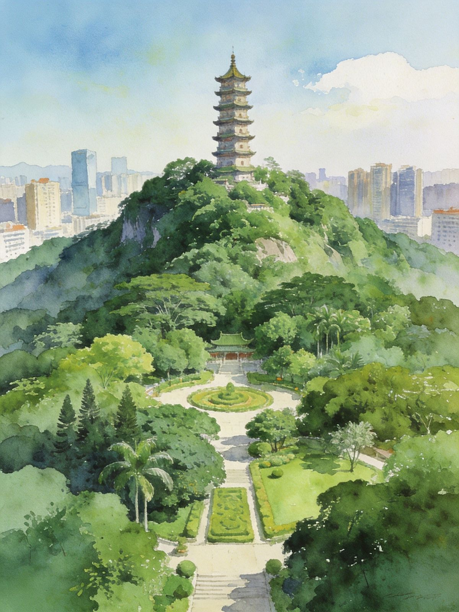
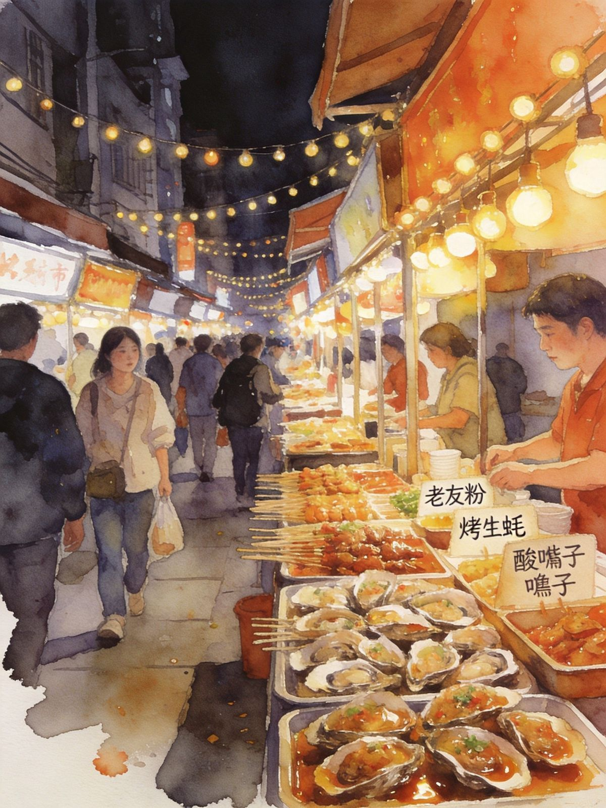
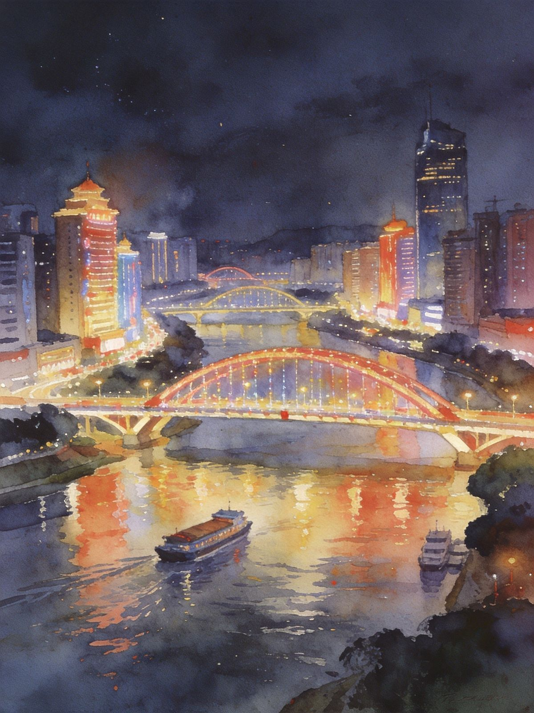

封面
总览
行前·交通·住
青秀山+夜市 · Day1
民族馆+邕江 · Day2
3日慢游
市区景点
美食清单
夜市烟火
避坑提示

NANNING · GREEN CITY
南宁绿城
广西首府 · 青秀山 · 邕江夜游
青秀山
邕江夜游
中山路夜市
老友粉
中转门户
广西 · 南宁
A5 口袋手册
· 2-3天
1
/ 10
南宁邕城
动线总览
2–3 天怎么玩
Route Overview
2天
精华
青秀山 + 夜市 + 邕江
绿城自然与广西美食集散地
3天
慢游
+ 民族博物馆 + 湿地
广西民族文化深度体验
TIP
南宁是
「半城绿树半城楼」
的绿城首府，青秀山闹中取静，
中山路/建政路夜市
汇聚广西美食，邕江夜游看城市霓虹。
1–3 人
高铁/飞机即达。
TIP
常作
赴桂南、德天、边境的中转门户
，多住一晚也不亏。夜市小吃鲜辣，点单先说辣度。
2
/ 10
南宁邕城
行前准备
出发前，记住
3 件事
Before You Go
🚄 怎么去
高铁
：全国多城直达
南宁东/南宁站
，区内枢纽
飞机
：吴圩国际机场，地铁/大巴进市区约40–60min
市内
地铁网络
覆盖主要景点
📅 最佳季节
11月至次年3月：
温暖舒适
，避寒佳选
9–10月暑退秋凉、果熟（芒果/龙眼）；7–8月湿热备伞
🏨 住哪
近夜市选
朝阳广场
（交通枢纽+夜市近）
安静近绿地选
青秀山/会展
片区
TIP
南宁市区不大，地铁+打车很方便，节奏可以放慢些。
3
/ 10
南宁邕城
Day1 · 青秀山 + 夜市
Day1 · 全天
绿城自然 · 夜市烟火
青秀山（苏铁园/天池）
→
广西民族馆
→
中山路夜市
🌿 青秀山
南宁绿肺，5A，
苏铁园/奇形怪状植物园、天池、观音禅寺
山顶可观城市全景，春樱花秋桂花
景区大，建议
半天+观光车
🎑 民族博物馆
壮族铜鼓文化、八桂民族风情
，免费值得一逛
TIP
晚上到
中山路/建政路夜市
，广西美食集散地，烧烤、老友粉、酸嘢、糖水一网打尽，越夜越热闹。
青秀山

夜市美食
4
/ 10
南宁邕城
Day2 · 邕江 + 老街
Day2 · 全天
邕江夜游 · 朝阳商圈
朝阳商圈/老友粉早餐
→
邕江边走走
→
邕江夜游
→
返程
🚶 老街早餐
老友粉、粉角早餐
是南宁正确的打开方式
朝阳商圈逛街买广西特产（芒果干/罗汉果）
🚢 邕江夜游
乘船看南宁两岸霓虹，
壶西/北大桥
夜景最美
江风凉、视野开阔，夜晚氛围佳
TIP
若作中转，
顺路可衔接德天跨国瀑布、北海、柳州
等桂南/桂北景点，南宁是很便利的集散地。

邕江夜游
朝阳商圈
5
/ 10
南宁邕城
3日 · 慢游线
3日 · 慢游
绿城民族深度游
D1 城标
→
D2 绿城·民族
→
D3 边玩边回
D1
抵达 · 城标
朝阳广场、中山路，吃老友粉
D2
绿城 · 民族
青秀山 + 广西民族博物馆 + 邕江夜游
D3
边玩边回
良庆/葫芦鼎湿地或水果市场，下午返程
TIP
南宁是中转好去处，可衔接
德天、北海、柳州
，多住一晚也不亏。节奏放慢，绿城随逛随歇。
6
/ 10
南宁邕城
市区景点
城区
· 值得一逛
City Attractions
🌿 青秀山（5A）
苏铁园、天池、观音禅寺，山顶全景
春樱花秋桂花，四季绿意
🏛 广西民族博物馆
壮族铜鼓文化、八桂风情，
免费
了解广西多民族文化的窗口
🌊 邕江夜游
两岸霓虹，《壶西/北大桥》夜景最美
乘船赏城市夜色，凉爽惬意
TIP
青秀山较大，建议
半天+观光车
；民族博物馆与邕江可顺路串联。
7
/ 10
南宁邕城
美食清单
邕城味道
· 老友与酸辣
Eat · Local
🍜
老友粉
南宁头号灵魂，酸辣鲜香
🦆
柠檬鸭
果酸清爽开胃
🍥
生榨米粉 / 卷筒粉
街头粉食，烟火气浓
🍬
粉角 / 酸嘢
腌水果开胃零嘴
TIP
夜市集中在
中山路、建政路、农院路
，宵夜到下半夜；螺蛳粉（柳州同源）、八宝饭也值得一试。
8
/ 10
南宁邕城
夜市烟火
夜市
· 越夜越热闹
Night Market
🥡 去哪里
中山路
：游客打卡夜市，汇聚广西各地小吃
建政路
：本地老字号夜市，更地道的烟火气
推荐
：烤生蚝、酸嘢、老友粉、糖水、烤肉
⚠️ 注意
夜市卫生大多不错，但
生腌/酸嘢肠胃弱者慎选
人多注意
随身财物
；点单先说辣度
TIP
建政路比中山路更接地气、本地人更多；时间足可两个夜市都逛。
夜市一条街
邕江夜色
9
/ 10
南宁邕城
避坑提示
看清这些，玩得更安心
Stay Safe
☀️
夏季湿热
午后少安排户外暴晒行程，多备水与伞
🚕
打车
选正规平台，车站附近勿坐黑车
🌶
辣度
夜市点单先说辣度，广西多数偏辣
🌿
青秀山
景区较大，建议半天+观光车
⚠️
紧急
紧急拨 110 / 120；消费纠纷拨 12345
南宁绿城「WorldStip」祝你玩得开心 🌿
10
/ 10
WorldStip · 南宁 · 青秀山 / 邕江夜游 / 中山路夜市 / 建政路 · 数据以景区当日公示为准
Insta360
记录美好
记录美好生活
相机指南 · CAMERA GUIDE